Animal Crossing: New Horizons
Por cuestiones de la vida que no vale la pena detallar, hace unos meses me hice con una Nintendo Switch. Mientras esperaba su llegada, exploré la biblioteca de la consola para encontrar un juego que se ganara el honor de ser comprado. Justo por esas fechas, había mucho ruido generándose por la salida de Animal Crossing: New Horizons, así que terminé incluyendo el título en la cumbre de mis opciones.
Nunca había jugado un Animal Crossing en mi vida, no lo conocía en absoluto. Había visto sus memes y referencias en foros, pero nunca me interesó profundizar en conocerlo. Cuando busqué información de la saga, resultó ser que vio la luz en 2001 con la Nintendo 64 y de ahí en adelante su nombre no hizo más que popularizarse hasta convertirse en uno de los estrenos más esperados para la consola insignia actual de Nintendo. Además, el altísimo índice de compra del título era difícil de ignorar.
No necesité mucho tiempo para convencerme en comprarlo. Me lo pintaron como un juego sobre construir una fortuna de capital basado en la venta de recursos que obtendría al realizar tareas repetitivas. En pocas palabras, una granja de crecimiento exponencial, —Capitalismo, el videojuego— . Al principio creí que sería como Stardew Valley, pero me equivoqué. Nadie me preparó para lo que me encontré al abrir Animal Crossing: New Horizons por primera vez.
El éxito en ventas de Animal Crossing: New Horizons no para de sorprender y de paso impulsa las ventas de Nintendo Switch | https://t.co/tV3aqDjJrk
— Missing Number ✕ (@MissingN_) May 8, 2020
La premisa del juego es sencilla a más no poder y sabe más a excusa que a otra cosa. Tom Nook te facilita un viaje “vacacional” a una isla desierta sin infraestructura alguna más allá del aeropuerto por el que llegaste; así, el mapache favorito de todos termina pidiéndote ayuda para montar su paraíso vacacional. Ante tu trabajo duro —para nada relacionado con que eres el protagonista—, te nombran representante vecinal, adquiriendo poder sobre la isla, lo que te permite decidir la ubicación de las casa de tus nuevos vecinos, sitios de interés público y se te da la facilidad de montar y desmontar decoraciones, flora y vallas a lo largo y ancho de la isla.
Belleza en lo cotidiano
Su premisa no es lo único sencillo, las tareas base del juego son bastante simples. Talar solo es pulsar un botón frente a un árbol, pescar solo se trata de esperar que el pez pique para jalar el anzuelo y construir solo se basa en lanzar un objeto al suelo y arrastrarlo a donde más te guste.
Aún así, la atmósfera del juego siempre acompaña las tareas sencillas y repetitivas. La música es tranquila y melódica, los efectos sonoros —como los pasos sobre las diferentes superficies o el sonido del mar— son simples, pero bellos. Hablar con un vecino y escuchar su vocecita mientas miras su pelaje aterciopelado es tan bonito como ver como todos tus vecinos visten sus impermeables y paraguas cuando comienza a llover. Ver juntos a dos vecinos, sentaditos en una mesa que tu pusiste o cantando sentados en una banca es satisfactorio.
No solo es que cada mecánica esté envuelta en una sensación de tranquilidad, recorrer la isla da tranquilidad y permite apreciar cada rincón de la isla por más veces que la hayamos visto. Nunca será igual, porque el clima cambia aleatoriamente y los vecinos tienen sus propias rutinas como pescar, regar flores o solo sentarse a la orilla del río a comer una dona de chocolate.
A pesar de la sencillez de cada elemento en Animal Crossing, en conjunto logra construir un ambiente bello y activo que te hace apreciar cada árbol que golpeas y cada bicho que atrapas.
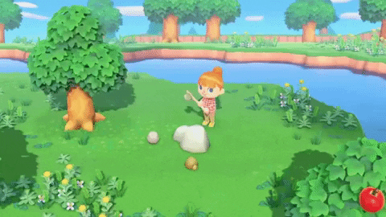 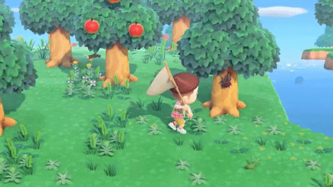Hoy, mañana y los días siguientes
Sin duda, lo que más me llama la atención del título es su gestión del tiempo. En Animal Crossing: New Horizons, los días ocurren en tiempo real, así que los eventos del juego están vinculados directamente con la realidad más allá del juego. Hay eventos que solo ocurren en periodos festivos que permiten al jugador acceder a objetos exclusivos, como la reciente Pascua, por ejemplo.
Además, el título tiene una forma particular de limitar las actividades del jugador. Hay acciones que solo pueden realizarse una vez al día, como recolectar madera de los arboles o metal de las piedras. Otras están limitadas a ciclos naturales como las frutas que crecen de los arboles o las flores que nacen de las semillas. Construir estructuras, como casa o puentes, toma un día desde que se selecciona el terreno que ocupará. Los vecinos pueden mudarse de tu isla, pero les tomará un par de días antes de que vuelvas a tener el terreno disponible.
Esta forma de vincular juego con lo que ocurre fuera de él, me impulsó a construir rutinas que organizaron mis sesiones de juego. Todo se trata de planeación. Si quería una tortuga de río, tenía que entrar al juego a pescar en la temporada correcta y en el horario que las tortugas aparecían. Así, mientras conseguía una tortuga para llevarla al museo, una tortuga para tener en casa y cinco más para poder encargar una figurita de decoración de tortuga, mi rutina real se adaptó para dejarme jugar un par de horas al día en el momento correcto.
Esta planeación hizo que entendiera mi progreso en el juego como una serie de proyectos. El proyecto de las tortugas me tomó casi dos semanas. Cuando me dispuse a adornar el ayuntamiento, me tardé cerca de cinco días. Cuando decidí decorar un cuarto de mi casa para que fuera mi habitación demoré casi un mes porque no tenía muchos muebles que usar. Así, planeaba sesiones de juego más o menos largas que dictaban el proyecto al que me dedicaría. En la isla yo soy mi propio jefe y eso es satisfactorio por sí mismo. Yo decido qué hacer, cuándo hacerlo y a qué ritmo. Esta sensación de libertad hace que cada proyecto se sienta único y propio, porque no es el juego el que te demanda ir y talar 30 arboles, eres tú el que decide hacerlo porque necesitas la madera para construir esa mesa que queda perfecta en medio de tu comedor. Aquí es donde entra el siguiente punto que me gustaría tratar: la creatividad.
De hacer y deshacer: El camino a la perfección
A pesar de que el juego tiene incluidas un montón de mecánicas de coleccionismo, creo que no se sustentarían por sí mismas sin las herramientas creativas de las que se dispone en la isla. La cantidad tan grande de objetos decorativos, ropa y muebles son un estimulante creativo que me permitió ir imaginando mientras jugaba a mi ritmo.
Por ejemplo, en mi isla hay un vecino llamado Ráfaga. Es un ave deportista que todo el tiempo habla sobre músculos y deportes. Una tarde, al revisar la tienda de la isla vi una máquina de ejercicios y pensé al momento “Esto es muy de Ráfaga”, así que la compré y la guardé en mi almacén. Luego encontré bicicletas, canastas de baloncesto y balones de distintos deportes...un montón de objetos me recordaban a Ráfaga, así que terminé montando un pequeño gimnasio y un parque público cerca de la casa del ave deportista.
Así, no solo era planear y ejecutar, muchas veces las ideas me venían mientras daba vueltas cazando bichos o cuando un vecino me regalaba muebles que quería usar. Al final, la decoración y el diseño de la isla era tejer y destejer ideas para poder terminar encantado con los resultados. Si conseguía nuevos objetos que encajaban con un proyecto terminado, regresaba a ese proyecto, porque podía y quería hacerlo. De esa manera he mantenido viva la isla, en mi propia búsqueda de un espacio que me encante y disfrute cada vez que entro en él.
No todo es maravilloso en una isla DESIERTA
El juego en la primera impresión es precioso, pero eso no lo exenta de tener problemas que pueden alejar a más de uno. Los menús pueden sentirse lentos e ineficientes, comprar objetos de uno en uno o en paquetes de cinco cuando querías 50 semillas es una pesadilla; al comprar prendas de ropa, estás limitado a aquella que puedes vestir al mismo tiempo, así que si quieres dos sombreros, deberás salir y volver a entrar al probador para poder comprarlos.
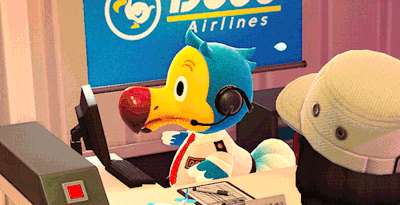Estas decisiones cuestionables de diseño pueden pasar a segundo plano, hasta yo me acostumbré a ellos y hoy ya no me representan mayor enfado. Algo que definitivamente nunca le perdonaré al título será el deficiente y limitado modo multijugador.
El cooperativo en línea es decente, pero mejorable. La única forma de jugar en línea es visitando islas; no hay manera de crear una isla en conjunto con amigos online, así que el multijugador en línea se reduce a la relación dueño-visitante.
El proceso de conexión es tedioso a más no poder. Hay que mantener una conversación con el dueño del aeropuerto para acceder a las opciones y no puede concretarse el viaje si en la isla destino hay alguien hablando o con un menú abierto, así que tocará esperar a que todos estén parados sin hacer nada para viajar. Así, el proceso de viaje se sienta más natural al tener que ir al mostrador para volar, pero todo el demás proceso es tan lento que esa naturalidad se rompe y se convierte en un pulsar botones hasta que me aparezca la pantalla de carga.
En cuanto al cooperativo local, es tan limitado que en mi caso particular no vale la pena ni tomarlo en cuenta. Al entrar en modo cooperativo, se asigna un líder de grupo y un asistente. Estos puestos son dinámicos, así que pueden ser cambiados en cualquier momento. El líder controla la cámara, así que será el centro todo el tiempo; tiene acceso a todas las mecánicas normales del juego. Sin embargo, el asistente no puede hacer mucho.
Quien acompaña no tiene inventario visible, así que para abrir su inventario tiene que ser el líder; al no tener inventario, cuando recoge un objeto del suelo este se va a una caja dentro del ayuntamiento. Por si fuera poco, hay una suerte de retraso de unos segundos mientras levanta el ítem y este se va a la caja que dejan al personaje parado mostrando el objeto a la cámara. En suma, el asistente no puede recolectar objetos de forma eficiente.
Además, al no poder recoger objetos, no puede construir herramientas, dependiendo por completo de que el líder pueda construirlas cuando éstas se rompan.
Esta sensación de anclaje con el líder hace que la experiencia del asistente sea extremadamente reducida y solo sea divertida para una visita con tour por la isla o para tratar a tu asistente como mano de obra, dejando el juego solitario en gran ventaja respecto al cooperativo local. Jugar solo, incluso al compartir una isla de forma local, se siente como la mejor forma de jugar la mayoría de las veces.
Aún con todas estas limitantes del juego cooperativo, Animal Crossing: New Horizons se juega mejor en compañía.
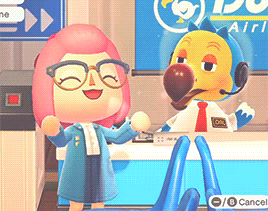El horizonte más allá de la consola
Conforme el tiempo avanzó, la gente comenzó a construir comunidades virtuales alrededor de Animal Crossing: New Horizons. Algunos de estos espacios solo se dedicaban a compartir sus creaciones y otros comenzaron a elaborar espacios de comercio de objetos decorativos y muebles. Cada acción que se realiza hoy en día en estas comunidades tiene su propio valor.
Compartir tus diseños ayuda a que otros jugadores obtengan ideas y las adapten en sus propias islas. Dar acceso a tu diseños de caminos o ropa puede darle a alguien el camino de piedras que se había imaginado pero no había sido capaz de hacer por su cuenta. El comercio es la forma más sencilla de conseguir todos los objetos para montar tu propia cafetería retro justo en el espacio que has apartado desde hace dos semanas.
El factor social del juego ha ido creciendo con el pasar de los días. Ya hay quienes hacen dinámicas para regalar objetos raros o concursos como si fueran reality shows de la televisión. Estas comunidades están proporcionándole capas de complejidad a un juego que, en su sencillez, ha atrapado a miles de jugadores.
Al final, el juego es más que montar un imperio económico emergente, coleccionar todos los ejemplares de fauna local o hacer que tu isla llegue a las 5 estrellas de popularidad. El juego puede ser muchas cosas, dependiendo de las necesidades y placeres de cada jugador y esta libertad es sin duda la mejor característica que Animal Crossing: New Horzons tiene para ofrecer. La isla de este juego es un espacio personal e íntimo que puede proporcionar muchos ratos de alegría, relajación y de alcanzar objetivos.
Queda pendiente ver si el título logra mantenernos atrapados con contenido periódico a lo largo del año. Entre actualizaciones y eventos el juego debe luchar por mantener la atención. Ojalá haya contenido y tiempo de juego para mucho rato, pero de momento Animal Crossing: New Horizons es un gran juego que dará a más de uno horas y horas de diversión en su camino por alcanzar la isla perfecta.
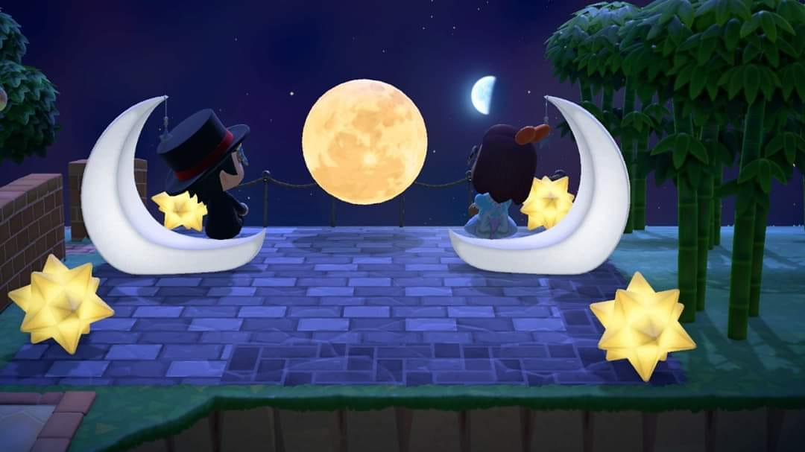 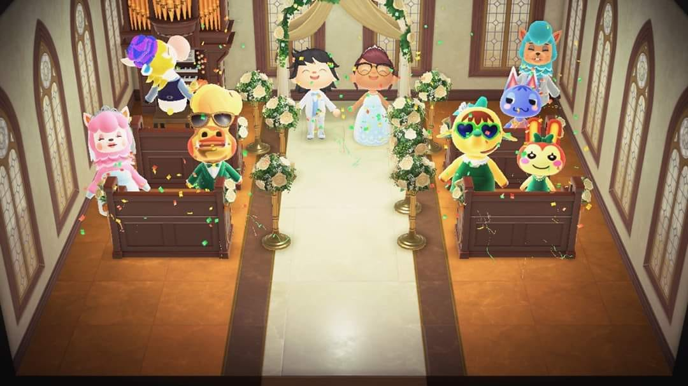 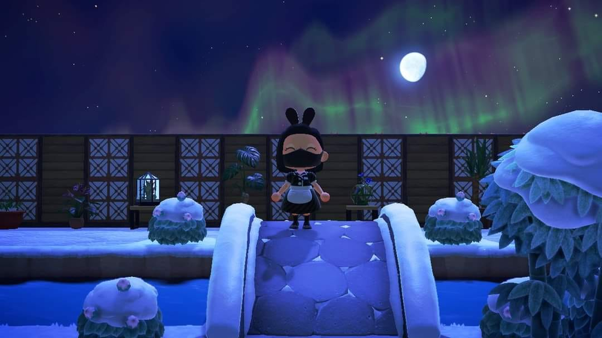 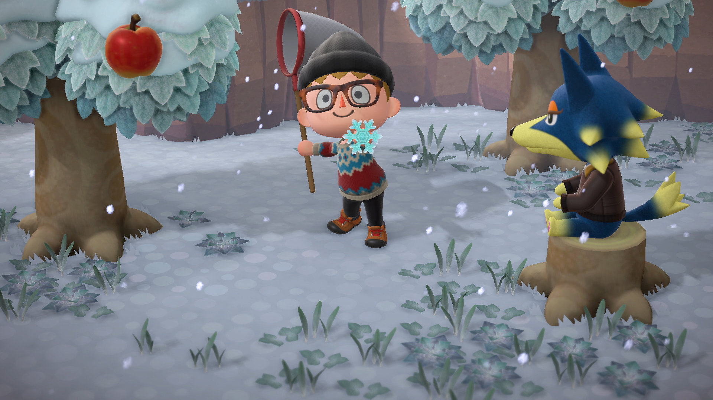 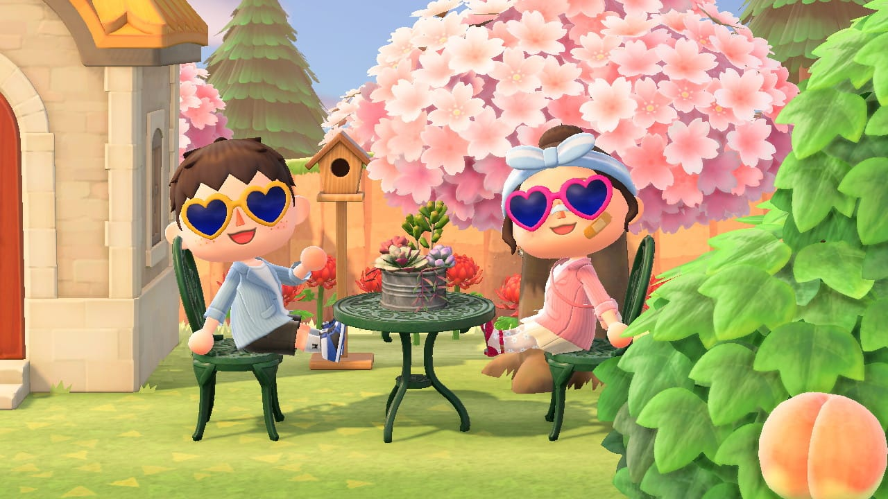 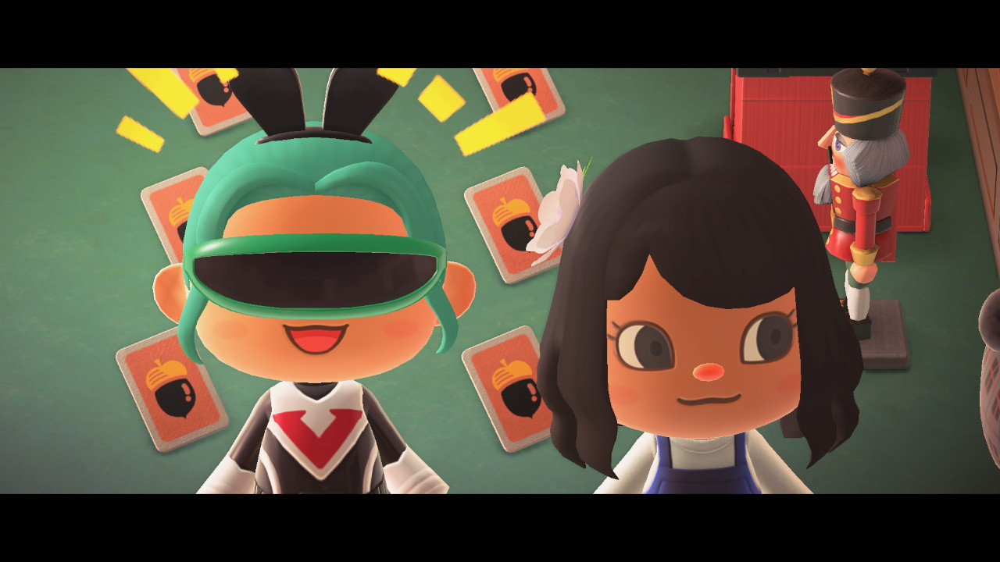 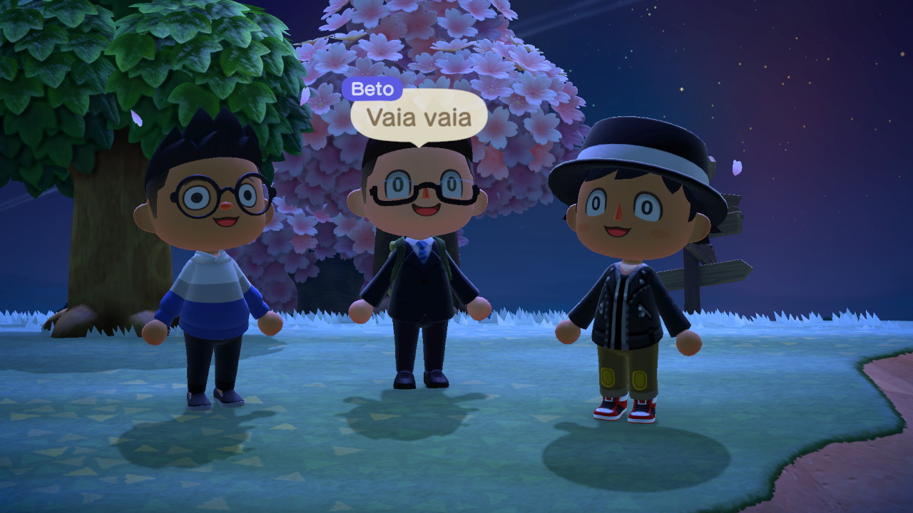 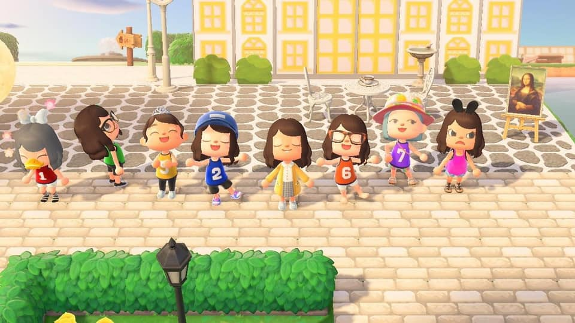 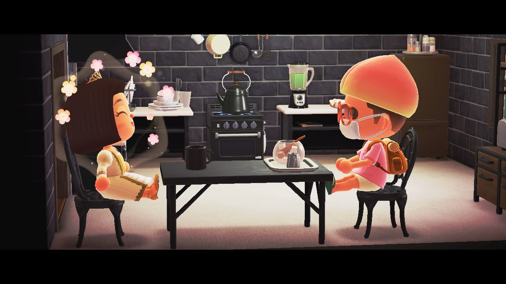 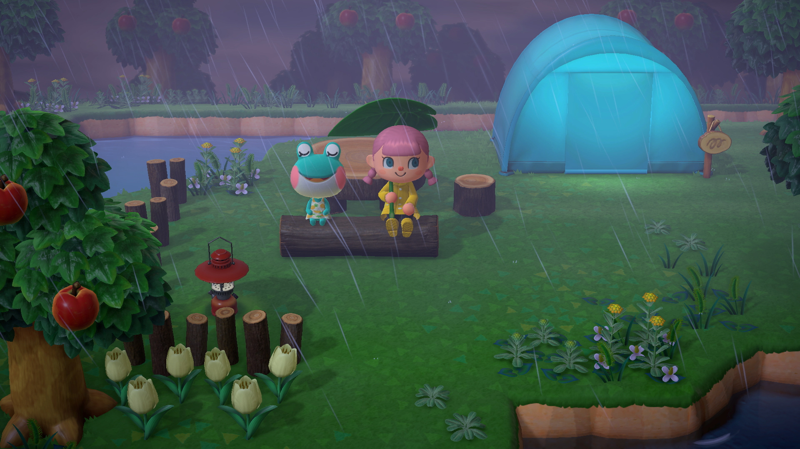Capturas cortesía de